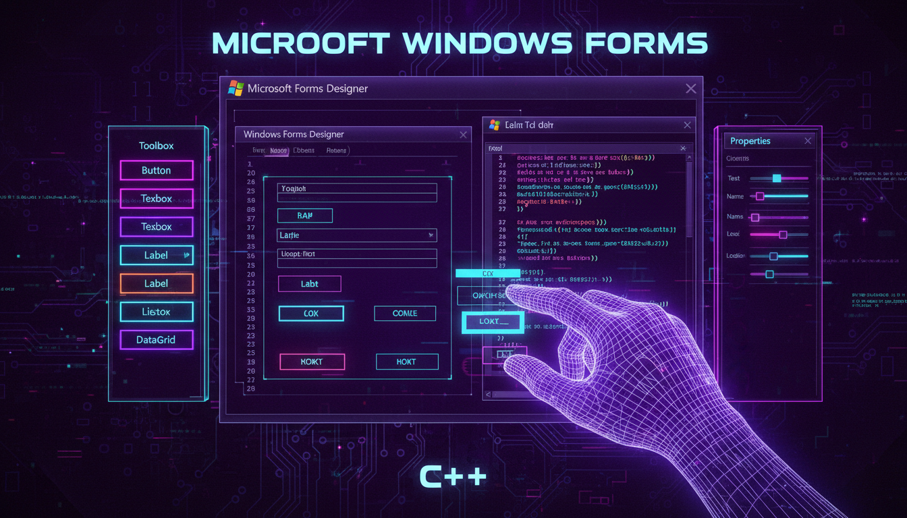

Огляд технології, історія, підготовка середовища

Рис. 1.1 — Розробка Windows Forms додатків у Visual Studio
Windows Forms (WinForms) — це бібліотека графічного інтерфейсу користувача (GUI) для .NET Framework. Вона дозволяє створювати настільні Windows-додатки з багатою візуальною функціональністю за допомогою drag-and-drop дизайнера форм.
Windows Forms є однією з найстаріших і найпопулярніших технологій для створення Windows-додатків. Хоча зараз є новіші технології (WPF, UWP, WinUI 3), WinForms залишається популярним завдяки своїй простоті та швидкості розробки.
Windows Forms працює на .NET Framework/.NET Core/.NET 5+. Для C++ використовується C++/CLI (Common Language Infrastructure) — розширення C++ для роботи з .NET.
| Рік | Версія | Особливості |
|---|---|---|
| 2002 | .NET Framework 1.0 | Перша версія Windows Forms |
| 2005 | .NET 2.0 | DataGridView, ToolStrip, TableLayoutPanel |
| 2006 | .NET 3.0 | Інтеграція з WPF |
| 2019 | .NET Core 3.0 | Підтримка WinForms на .NET Core |
| 2020 | .NET 5 | Об'єднана платформа |
| 2021+ | .NET 6+ | Покращена продуктивність, HiDPI |
// Перша програма Windows Forms на C++/CLI
#include <Windows.h>
#include <windows.forms.h>
using namespace System;
using namespace System::Windows::Forms;
[STAThread]
int main() {
Application::EnableVisualStyles();
Application::SetCompatibleTextRenderingDefault(false);
// Створення форми
Form^ form = gcnew Form();
form->Text = "Моя перша форма";
form->Width = 800;
form->Height = 600;
form->StartPosition = FormStartPosition::CenterScreen;
Application::Run(form);
return 0;
}Windows Forms побудований на класі System::Windows::Forms::Form, який є контейнером для елементів управління (controls). Кожна форма має:
// Події життєвого циклу форми
public ref class MainForm : public Form {
public:
MainForm() {
InitializeComponent();
}
protected:
virtual void OnLoad(EventArgs^ e) override {
// Викликається при завантаженні форми
// Тут ініціалізуються дані
Form::OnLoad(e);
}
virtual void OnShown(EventArgs^ e) override {
// Викликається при показі форми
Form::OnShown(e);
}
virtual void OnFormClosing(FormClosingEventArgs^ e) override {
// Викликається при спробі закриття
// Можна скасувати закриття: e->Cancel = true;
Form::OnFormClosing(e);
}
virtual void OnFormClosed(FormClosedEventArgs^ e) override {
// Викликається після закриття форми
// Очищення ресурсів
Form::OnFormClosed(e);
}
};